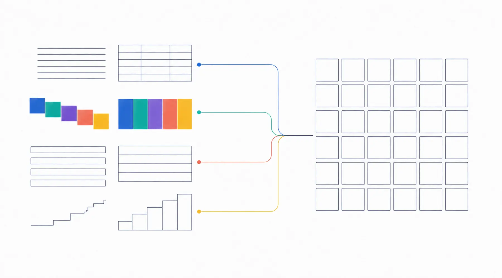

Web診断36の仕組み
Web診断36の仕組みWebサイトづくりの、
共通言語をつくる。
言葉にしにくいWebサイトの方向を、二つの軸と36タイプで見える形にします。正解や優劣を決めるのではなく、制作前の相談で使うための診断です。
- 横軸
- 実用・情報 ⇄ ブランド・魅力
- 縦軸
- 王道・安心 ⇄ 先進・新しさ
- タイプ
- 6 × 6 = 36
四つの視点
「好きなデザイン」だけでなく、「Webサイトで何を優先するか」を四つに分けて聞きます。
迷わずたどり着けるか
料金、対応範囲、手順が分かりやすいか。必要な情報へ最短で届くか。
印象に残るか
事業らしさ、価値、雰囲気が伝わるか。他と入れ替えられない部分があるか。
安心して読めるか
見慣れた構成、落ち着いた表現、誠実さで不安が減るか。
今らしさが伝わるか
現在の標準に合っているか。成長性や新しい考え方が伝わるか。

二つの軸と36タイプ
横軸は「実用・情報 ⇄ ブランド・魅力」、縦軸は「王道・安心 ⇄ 先進・新しさ」です。それぞれを6段階に分け、6 × 6 = 36タイプとして今回の回答位置を表示します。
四つの視点それぞれの合計点から、横の位置（ブランド − 実用）と縦の位置（先進 − 王道）を計算します。中央からの距離は、今回の回答でどちらをどの程度優先したかを表します。事業の良し悪しや、将来の成果を示す値ではありません。
タイプに優劣はありません。36の位置は、優先順位の違いを表しているだけです。
16問と84問
どちらも同じ36タイプを使います。質問数の違いは回答量の違いです。
かんたん診断
四つの視点を4問ずつ答え、短時間で方向をつかむ版です。6問 × 3ページ（6問・6問・4問）で終わります。
じっくり診断
同じ四つの視点を、料金、文章、画像、更新など、より多くの場面から整理する版です。6問 × 14ページ。制作前に考えを細かく言葉にしたい場合に向きます。
質問数の違いは、人や事業の優劣を示すものではありません。16問版のスコアは84問版と同じ境界で表示できるよう正規化しています。84問版は一問の回答に左右されにくくなりますが、心理尺度としての信頼性や統計的な精度を検証した診断ではありません。途中で84問へ切り替えても、共通する16問の回答は引き継がれます。
結果は、こう表示されます
実際の結果画面をそのまま表示しています。画像ではありません。
結果サンプルを読み込んでいます。表示されない場合は 結果サンプルのページをご覧ください。
結果の使い方
結果を見て終わりにせず、制作の会話へ持ち込むための5段階です。
納得できる点と違和感がある点を分ける
すべてが当たっている必要はありません。違和感のある項目こそ、相談で話す価値があります。
近い3タイプと比べる
「こちらの方が近い」と感じたら、その理由が本当の優先順位です。
必要なページと機能を選ぶ
結果に出たページ構成を、今の事業に合わせて足し引きします。
参考サイトの好きな点を、診断の言葉で説明する
「おしゃれ」ではなく「ブランド寄りで、先進寄り」と言えると、認識のずれが減ります。
予算と準備状況でプランを比べる
診断結果はプランを決めません。ページ数と準備状況から、ご自身で選んでください。
次点や精度ではありません。36の格子の中で、あなたの位置から距離が近いタイプです。方向性が似ているので、比較の材料として使えます。
心理検査、性格診断、経営診断ではありません。Webサイトの成果、検索順位、売上を予測するものでもありません。回答は端末内に30日間だけ保存し、外部へ送信しません。